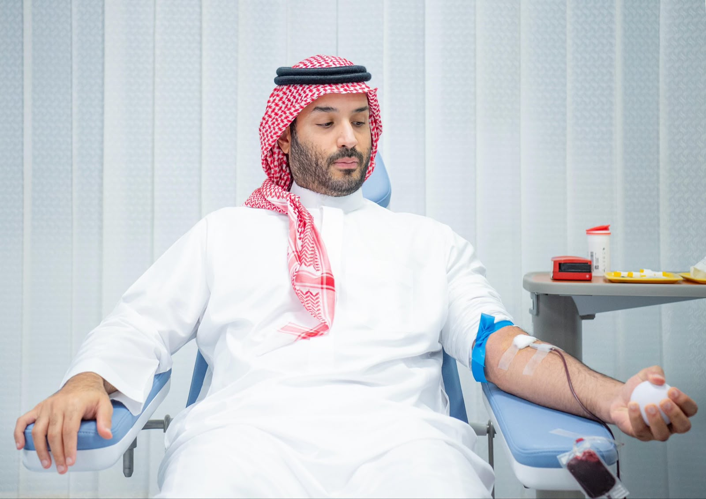

About the System
A digital humanitarian platform aimed at facilitating the blood donation process and connecting donors with those in need quickly and efficiently, ensuring prompt access to assistance and saving lives.
The Team
This system was developed with dedication and care by the students: Danah Almutairi and Almaha Alkhashan, Information Systems students.
We chose to develop this system out of a sense of social responsibility and a keenness to provide a technical solution that helps people and facilitates blood donation procedures with ease and convenience, following the approach and initiatives of His Royal Highness Crown Prince Mohammed bin Salman -may God protect him- in humanitarian work and community service.

Learn More About Our Mission
Pulse of Life connects blood donors with patients in need quickly and efficiently.